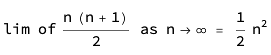

Visualizer for the sum of the first n natural numbers
Arihant Gadgade
Writings
Date Published: 9/20/2024
Decided to play around with coding up math visualizations in Mathematica or Manim.
I typically use Mathematica for animations/visualizations, but I want to play around with Manim.
May do Manim in future visualizations.
Sum of first n natural numbers
I've seen this visualization before, and liked it, so I decided to to create it myself in Mathematica.
We see that the stack of squares approaches a right triangle as we’d expect for large n.

Which is the formula for an isosceles right triangle.I very much like this theorem and especially this visual proof, as we can see how a number theory type problem can be converted into a geometric problem to then be solved and converted back over. Beautiful example of how different areas of math connect.
Wolfram Community link: SumOfFirstNNatNums
Here's the code on GitHub: SumOfFirstNNatNums